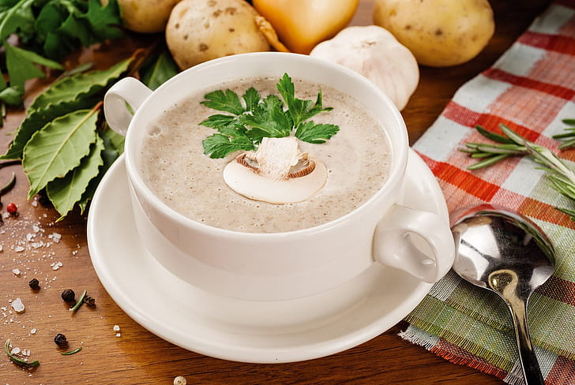

Soppsuppe smaker utrolig godt som både forret, middagsrett og kveldsmat. Spesielt godt passer denne suppen om høsten.
1 L sopp (f.eks. kantarell, sjampinjong eller traktkantarell)
1 stk løk
2 ss meierismør
2 dl matfløte
8 dl kjøttbuljong
1 ss maizena
1/2 ts salt
pepper
4 ss Sherry
1. Surr biter av sopp og løk i smør uten at det tar farge.
2. Tilsett fløte og la det trekke noen minutter på svak varme.
3. Spe ut med buljong og la det trekke til soppen er myk.
4. Tilsett eventuelt litt maizena for å få suppen tykkere.
5. Smak til med salt og pepper, og ha i sherry hvis du vil.
6. Server suppen varm, gjerne med strimler av purre og litt sopp.